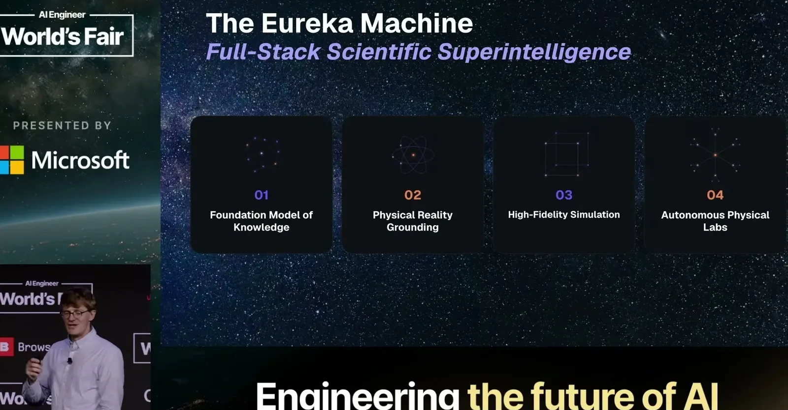
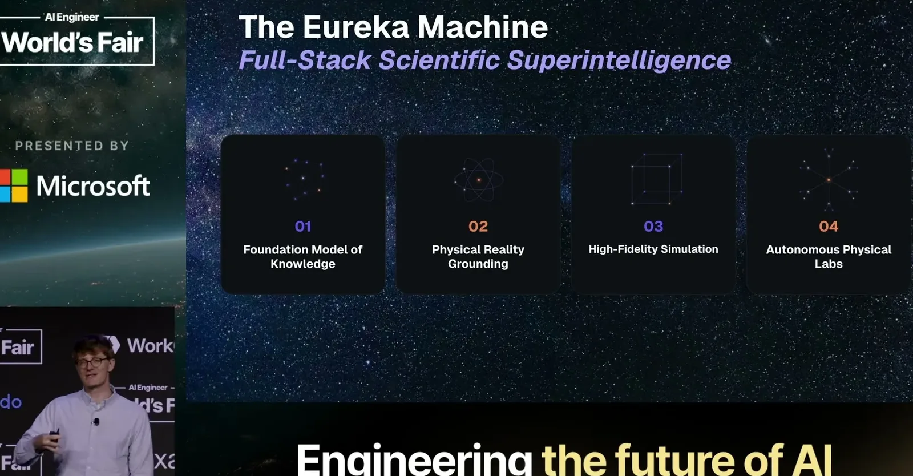
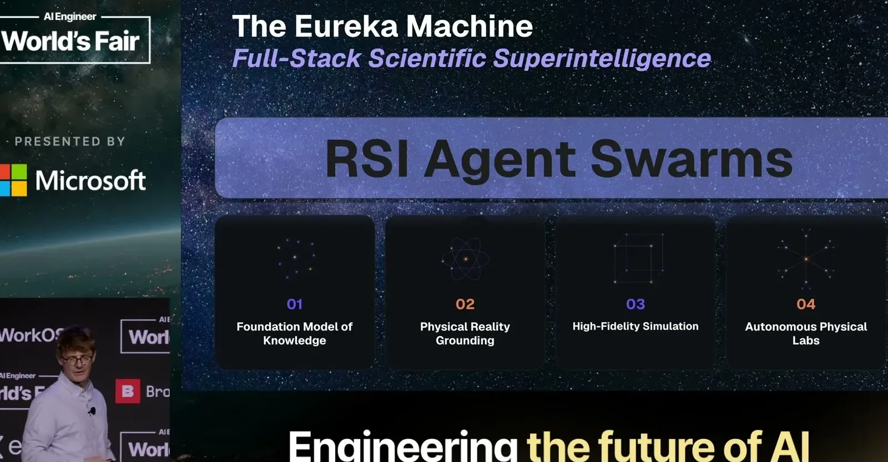
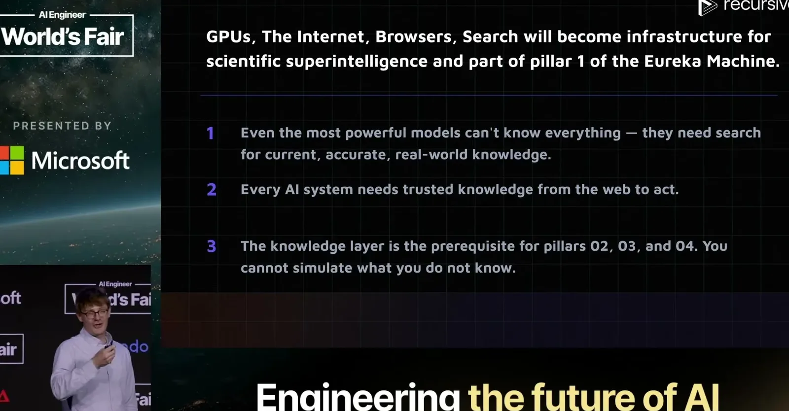
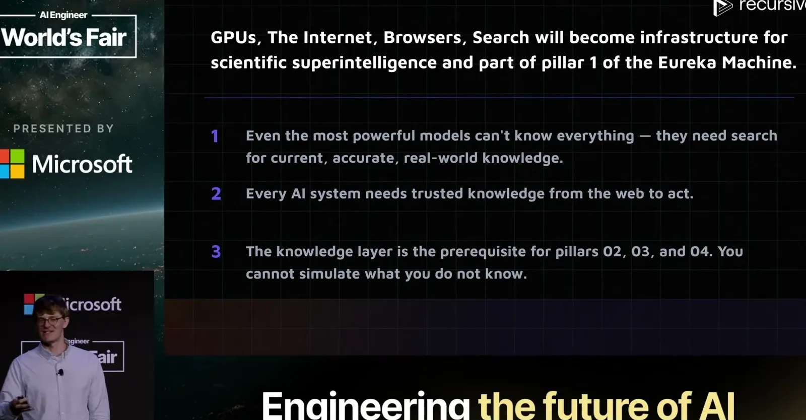
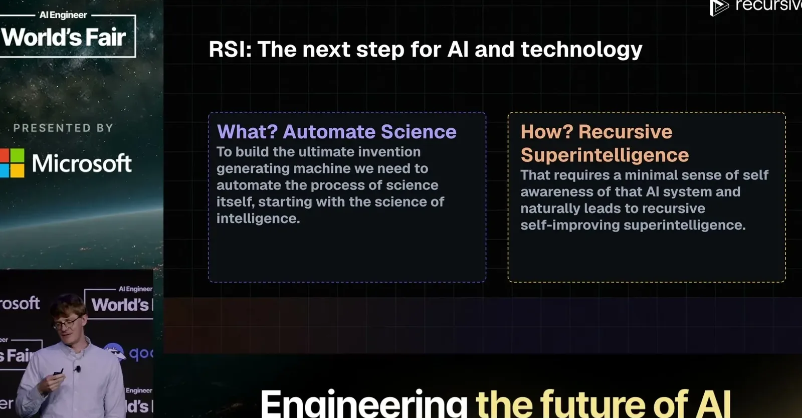
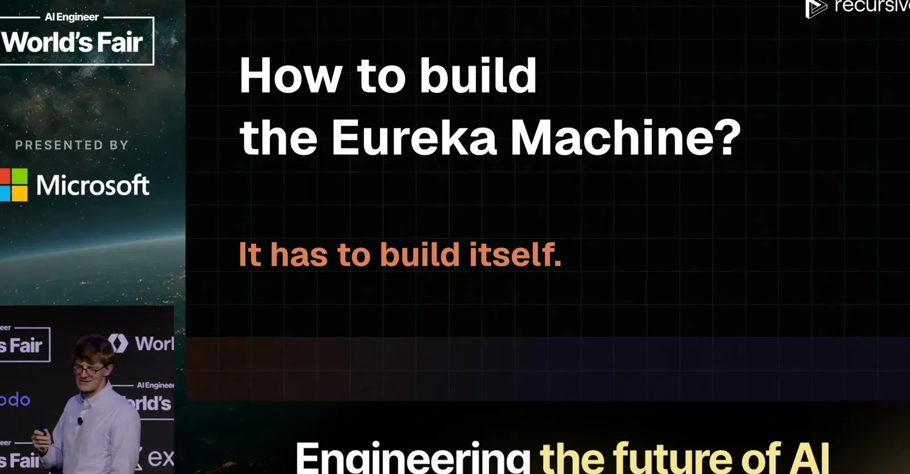
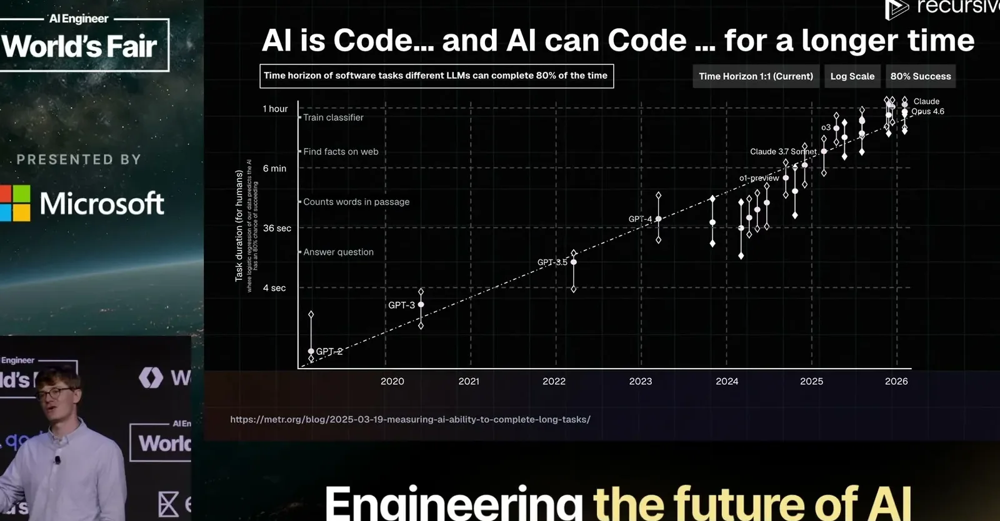
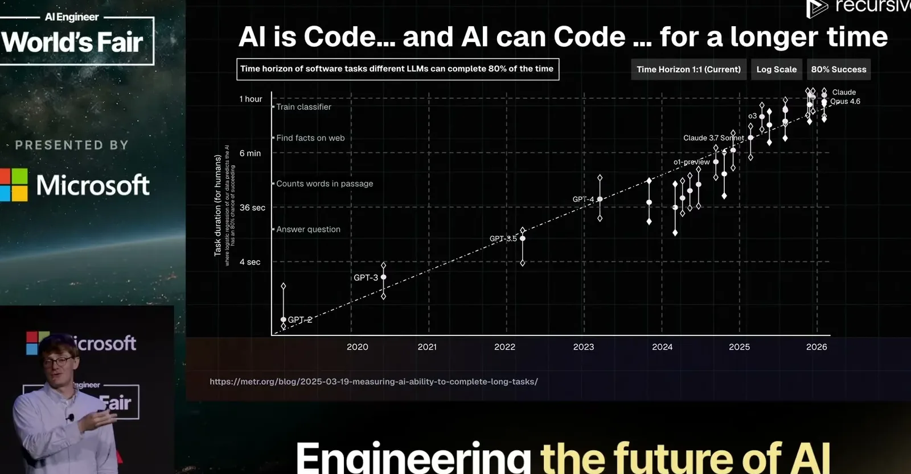

First Steps Toward Automated AI Research
Distinguishes weak auto-research (an AI improving some other model or process) from true recursive self-improvement (an AI with self-awareness of its own shortcomings and full control over its own pretraining, RL, and harness), and backs...
If you only read one thing
- Socher frames Recursive AI's goal as building a "Eureka machine" — an AI system that automates scientific discovery — resting on four pillars: existing knowledge, measurement data, simulation, and physical lab experiments (c2, c5).
- He distinguishes weak auto-research, where an AI improves some other model or process, from true recursive self-improvement, where the AI has self-awareness of its own shortcomings and full access to update its own pretraining, RL training, and harness (c6).
- Early proof points: a NanoChat run improved the community's best bits-per-byte score from 0.93 to 0.91 using self-discovered techniques like hash bi-gram embeddings, and a separate run found CUDA kernels beating the public Nvidia benchmark leaderboard (c7, c8, c9).
Recursive AI frames the Eureka machine as resting on four input pillars, with the NanoChat and CUDA-kernel results sitting in the weaker auto-research category rather than true recursive self-improvement (ours).


The Eureka machine
- Socher describes the long-term goal as a "Eureka machine": a system meant to eventually invent future inventions for humanity by automating scientific discovery, built on four pillars, existing knowledge, scientific measurement data, simulation for anything that can be modeled and verified, and physical industrial labs for what still requires real-world experiments.
“the Eureka machine. A machine that will eventually invent pretty much all future inventions for humanity.”
said at 00:30“there are essentially four pillars that are all extremely important to this machine.”
said at 09:21


Why this is possible now
- He argues that AI engineers should expect to become managers of AI systems that do AI research themselves, drawing an analogy to earlier shifts in NLP where removing manual feature engineering produced bigger gains than hand-tuning.
- He frames the moment as newly possible because models can now code over long time horizons, a capability he says only emerged in roughly the last six to eight months.
“it may be true that we should fire all the AI engineers uh and that that are here uh and have them mostly manage an actual AI engineer that is AI and works on AI”
said at 01:32“we're probably, and I sometimes say this, we're like too late to explore Earth, we're too early to explore the stars, but we're right on”
said at 05:43Technology as the growth engine
- Citing Marc Andreessen's techno-optimist framing, Socher argues technology is the only perpetual source of economic growth and that scaling scientific discovery should therefore expand human flourishing rather than displace it.
“he wrote this really great uh, techno-optimist manifesto in which he, I think, correctly points out that the only perpetual source of growth for the entire economy”
said at 04:08Weak auto-research versus true recursive self-improvement
- Socher draws a line between systems that merely automate research on some other model or process (weak auto-research) and true recursive self-improvement, which requires an AI to have self-awareness of its own shortcomings and full access to update its own pretraining, RL training, and harness.
“True recursive self-improvement is when you have an AI that has a sense of self-awareness of its own shortcomings, full access over everything uh in its arsenal from pre-training to RL training”
said at 14:27


Early results
- Recursive AI's system improved a community NanoChat benchmark from 0.93 to 0.91 bits per byte, discovering techniques like hash bi-gram and tri-gram embeddings rather than just tuning hyperparameters.
- On a separate CUDA kernel task, the system found kernels that beat the best entries on Nvidia's public benchmark leaderboard after a few days, despite the team having no dedicated CUDA kernel experts.
“0.93 and after training this for a little more than a day or two, we basically got it down to 0.91.”
said at 16:34“it actually did find truly interesting novel ideas like hash bi-grams and tri-gram embeddings and tables for those”
said at 16:03“after a couple days it discovered better kernels than the leader boards best on the Nvidia benchmark website by again quite quite a sizable margin”
said at 18:09Commentary (ours)
(ours) The weak-vs-true-RSI distinction is a useful filter for any "self-improving AI" claim in the wild: ask whether the system has access to update its own pretraining and RL process, or whether it is only optimizing something downstream of itself.













Underlying detail — every claim, typed and timestamped (9)
| Stance | Claim | t |
|---|---|---|
| asserts | The long-term goal is a machine that eventually invents future inventions for humanity. | 00:30 |
| predicts | AI engineers may end up mostly managing an AI system that does AI research itself, similar to how removing manual linguistic feature engineering improved machine translation. | 01:32 |
| asserts | Citing Andreessen's techno-optimist manifesto, technology is described as the only perpetual source of growth for the economy. | 04:08 |
| asserts | Socher frames the moment as too late to explore Earth and too early for the stars, but right for building AI capable of a comparable leap. | 05:43 |
| asserts | The Eureka machine rests on four pillars: existing knowledge, measurement data, simulation, and physical lab experiments. | 09:21 |
| asserts | True recursive self-improvement requires an AI with self-awareness of its own shortcomings and full access to update its own pretraining and RL training, unlike weaker auto-research systems that just improve some other process. | 14:27 |
| asserts | An auto-research run improved a NanoChat benchmark from 0.93 to 0.91 bits per byte in a little over a day. | 16:34 |
| asserts | The system discovered novel architectural ideas, such as hash bi-gram and tri-gram embeddings, rather than just tuning hyperparameters. | 16:03 |
| asserts | The same auto-research system discovered CUDA kernels beating the best entries on Nvidia's public benchmark leaderboard after a couple of days. | 18:09 |
Machine-readable copy embedded in this page (script#ontology) and in the corpus ontology.